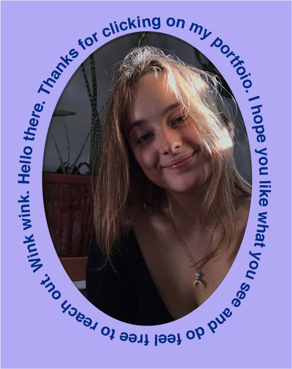

Hello. I'm Viola.
I am from Copenhagen, Denmark, where I’m currently doing an AP in Multimedia Design on the international line. I really enjoy the creative process, though I find it much more challenging than coding, which is more logical and “safe”. Therefore, I choose the Digital Design and Content elective, to challenge myself a bit and get out of my comfort zone. I’ve really enjoyed it so far, and sometimes we even dive into the psychological/sociological aspects of design and communication, which I LOVE.
When I grow up, I wanna be...
What I know…
Webdevelopment
- HTML
- CSS
- JavaScript
- Wordpress
- Bootstrap
- Greensock
- Git/Github
- Animations
- JSON
- CMS
- RestDb
- Dynamic web
- Netlify
- Insomnia
Design & content
- Adobe Photoshop
- Adobe Illustrator
- Adobe XD
- Adobe InDesign
- Animated GIF's
- Wireframes/ Prototypes
- Testing
- Composition
- Information Architecture (IA)
- Design systems & libraries
- Visual identities
- Logos & 5. elements
- Moodboards & style tiles
SoMe & marketing
- SEO
- Neuromarketing & consumer psychology
- PESTEL & SWOT
- User stories
- OMD model (consumer journey)
- Target groups & personas
- Business model canvas
- Copywriting
- MailChimp
- GDPR & cookies
- Facebook business manager
Other
- Premiere Pro
- Idea generation
- Report writing
- Team Canvas & Trello
- Concept development
- UX research/ design
- Trend research & benchmarking
- Motion graphics
- Interviews